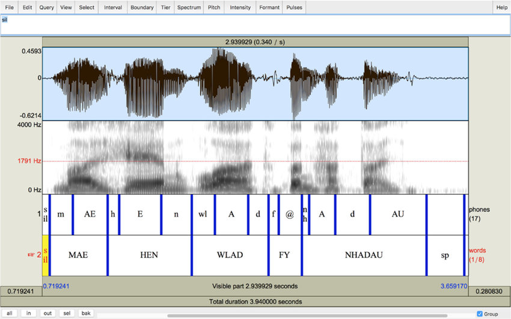

Praat and TextGrid¶
Praat¶
Praat语音学软件，原名Praat: doing phonetics by computer，通常简称Praat，是一款跨平台的多功能语音学专业软件，主要用于对数字化的语音信号进行分析、标注、处理及合成等实验，同时生成各种语图和文字报表。
TextGrid¶
TextGrid文件结构¶
第一行是固定的:File type = "ooTextFile"
第二行也是固定的:Object class = "TextGrid"
空一行
xmin = xxxx.xxxx # 表示开始时间
xmax = xxxx.xxxx # 表示结束时间
tiers? <exists> # 这一行固定
size = 4 # 表示这个文件有几个item, item也叫tiers, 可以翻译为'层', 这个值是几,就表示有几个item
item []:
item [1]:
class = "IntervalTier"
name = "phone"
xmin = 1358.8925
xmax = 1422.5525
intervals: size = 104
intervals [1]:
xmin = 1358.8925
xmax = 1361.8925
text = "sil"
intervals [2]:
xmin = 1361.8925
xmax = 1362.0125
text = "R"
intervals [3]:
...
intervals [104]:
xmin = 1422.2325
xmax = 1422.5525
text = "sil"
item [2]:
class = "IntervalTier"
name = "word"
xmin = 1358.8925
xmax = 1422.5525
intervals: size = 3
intervals [1]:
xmin = 1358.8925
xmax = 1361.8925
text = "sp"
textgrid 文件中的 size 的值是几就表示有几个 item， 每个 item 下面包含 class, name, xmin, xmax, intervals 的键值对，item 中的 intervals: size 是几就表示这个 item 中有几个 intervals，每个 intervals 有 xmin, xmax, text 三个键值参数。所有 item 中的 xmax - xmin 的值是一样的。
安装¶
pip3 install textgrid
使用¶
读一个textgrid文件
import textgrid tg = textgrid.TextGrid() tg.read('file.TextGrid') # 'file.TextGrid' 是文件名
tg.tiers属性: 会把文件中的所有item打印出来, print(tg.tiers) 的结果如下:
[IntervalTier( phone, [ Interval(1358.89250, 1361.89250, sil), Interval(1361.89250, 1362.01250, R), Interval(1362.01250, 1362.13250, AY1), Interval(1362.13250, 1362.16250, T), ... ] ) ]此外, tg.tiers[0] 表示第一个 IntervalTier, 支持继续用中括号取序列, '.'来取属性. 比如:
tg.tiers[0][0].mark --> 'sil' tg.tiers[0].name --> 'phone' tg.tiers[0][0].minTime --> 1358.8925 tg.tiers[0].intervals --> [Interval(1358.89250, 1361.89250, sil), ..., Interval(1422.23250, 1422.55250, sil)] tg.tiers[0].maxTime --> 1422.55250
TextGrid 模块中包含四种对象
PointTier 可以理解为标记（点）的集合 IntervalTier 可以理解为时长（区间）的集合 Point 可以理解为标记 Interval 可以理解为时长
textgrid库中的对象 IntervalTier 对象: 方法
add(minTime, maxTime, mark): 添加一个标记,需要同时传入起止时间, 和mark的名字. addInterval(interval): 添加一个Interval对象, 该Interval对象中已经封装了起止时间. remove(minTime, maxTime, mark): 删除一个Interval removeInterval(interval): 删除一个Interval indexContaining(time): 传入时间或Point对象, 返回包含该时间的Interval对象的下标 例如: print(tg[0].indexContaining(1362)) --> 1 表示tg[0] 中包含1362时间点的是 下标为1的 Interval 对象 intervalContaining(): 传入时间或Point对象, 返回包含该时间的Interval对象 例如 print(tg[0].intervalContaining(1362)) --> Interval(1361.89250, 1362.01250, R) read(f): f是文件对象, 读一个TextGrid文件 write(f): f是文件对象, 写一个TextGrid文件 fromFile(f_path): f_path是文件路径, 从一个文件读 bounds(): 返回一个元组, (minTime, maxTime)
属性
intervals --> 返回所有的 interval 的列表 maxTime --> 返回 number(decimal.Decimal)类型, 表示结束时间 minTime --> 返回 number(decimal.Decimal)类型, 表示开始时间 name --> 返回字符串 strict -- > 返回bool值, 表示是否严格TextGrid格式
PointTier 对象: 方法
add(minTime, maxTime, mark): 添加一个标记,需要同时传入起止时间, 和mark的名字. addPoint(point): 添加一个Point对象, 该Point对象中已经封装了起止时间. remove(time, mark): 删除一个 point, 传入时间和mark removePoint(point): 删除一个 point, 传入point对象 read(f): 读, f是文件对象 write(f): 写, f是文件对象 fromFile(f_path): f_path是文件路径, 从一个文件读 bounds(): 返回一个元组, (minTime, maxTime)
属性
points 返回所有的 point 的列表 maxTime 和IntervalTier一样, 返回结束时间 minTime 和IntervalTier一样, 返回开始时间 name 返回name
Point 对象: 支持比较大小, 支持加减运算 属性:
mark: time:
Interval 对象: 支持比较大小, 支持加减运算 支持 in, not in 的运算 方法:
duration(): 返回number 类型, 表示这个Interval的持续时间 bounds(): --> 返回元组, (minTime, maxTime) overlaps(Interval): --> 返回bool值, 判断本Interval的时间和传入的的Interval的时间是否重叠, 是返回True
属性:
mark maxTime minTime strick: --> 返回bool值, 判断格式是否严格的TextGrid格式
TextGrid 对象: 支持列表的取值,复制, 迭代, 求长度, append, extend, pop方法 方法:
getFirst(tierName) 返回第一个名字为tierName的tier getList(tierName) 返回名字为tierName的tier的列表 getNames() 返回所有tier的名字的列表 append(tier) 添加一个tier作为其中的元素 extend(tiers) 添加多个tier作为其中的元素 pop(tier) 删除一个tier read(f) f是文件对象 write(f) f是文件对象 fromFile(f_path) f_path是文件路径
属性：
maxTime minTime name strict tiers 返回所有tiers的列表
MLF 对象 MLF('xxx.mlf') 'xxx.mlf'为mlf格式的文件, 读取hvite-o sm生成的htk.mlf文件并将其转换为 TextGrid的列表 方法:
read(f) f是文件对象 write(prefix='') prefix是写出路径的前缀,可选
属性:
grids: --> 返回读取的grids的列表
Reference¶
https://zh.wikipedia.org/wiki/Praat%E8%AF%AD%E9%9F%B3%E5%AD%A6%E8%BD%AF%E4%BB%B6
https://blog.csdn.net/duxin_csdn/article/details/88966295